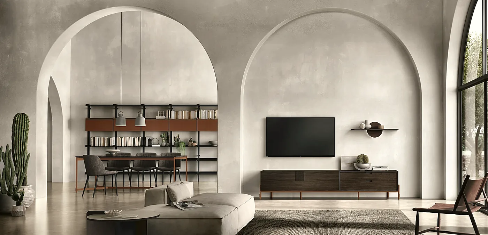

Dressing, sous-pente, bibliothèque
Sur mesure
Dessinés au centimètre, fabriqués par un atelier partenaire en Belgique et par Tomasella.
- Nous venons chez vous
- Première visite, mesures et devis offerts
- Sans engagement
Ce que nous réalisons
Ce qui se mesure se dessine.
Murs biscornus, pentes de toit, recoins : on part de la pièce telle qu’elle est.
-
Dressing
Compartiments pensés pour votre garde-robe, finitions assorties à la chambre.
-
Bibliothèque
Un mur entier, pleins et vides dosés selon ce que vous montrez.
-
Meuble TV
Équipements intégrés, câbles cachés, et le lien avec le séjour.
-
Sous-pente
Des rangements qui suivent la pente du toit.
-
Entrée et hall
Manteaux, chaussures, clés : rangés dès la porte.
-
Sous escalier
Tiroirs, placards ou bibliothèque sous les marches.
-
Confort et mobilité
Nous repensons l’aménagement pour le confort et la mobilité : des rangements qu’on atteint sans se baisser.

Armoire-dressing à portes coulissantes 
Meuble TV et rangements suspendus 
Façade laquée, poignée intégrée


Deux savoir-faire
Un seul interlocuteur.
-
Un atelier partenaire en Belgique
Pour les pièces uniques : formes atypiques, matériaux choisis avec vous.
-
Tomasella
Pour les systèmes modulables : armoires, dressings, compositions de séjour.
Comment se passe votre projet
De la visite à la pose.
-

01On se rencontre
Au magasin ou chez vous : ce que vous rangez, comment vous vivez la pièce.
-
 02
02On mesure
Relevé complet sur place : murs, pentes, prises, plinthes.
-
03
On dessine
Plan, façades, poignées, teintes et matières, ajustés ensemble.
-
 04
04On installe
Livraison par nos soins, pose par notre équipe ou un professionnel partenaire, finitions ; nous restons joignables. Démontage et évacuation de l’ancien mobilier sur demande, modalités au magasin.


Vous êtes professionnel ?
Nous aménageons aussi vos espaces.
Hôtels et restaurants, bureaux, promoteurs, maisons de repos.
Voir l’espace proVos questions
Avant de commencer.
Que faut-il apporter au magasin ?
Les cotes du mur — largeur, hauteur, profondeur — une photo, et une idée de ce que vous voulez ranger. Sans mesures, nous venons les relever.
Quel délai faut-il prévoir ?
Visite et mesures dans la semaine, parfois le jour même ; puis huit à dix semaines entre la commande signée et la pose, selon le fabricant et la saison.
Puis-je assortir le sur mesure à mes meubles existants ?
Oui : on part de ce que vous avez déjà.
Parlons de votre projet sur mesure.
Remplissez la fiche ou appelez-nous : nous convenons d’une visite, ou nous vous aiguillons par téléphone.
- Lundi
- 13h30 – 18h30
- Mardi au samedi
- 10h30 – 18h30
- Dimanche
- Fermé
- Téléphone
- 064 46 07 72